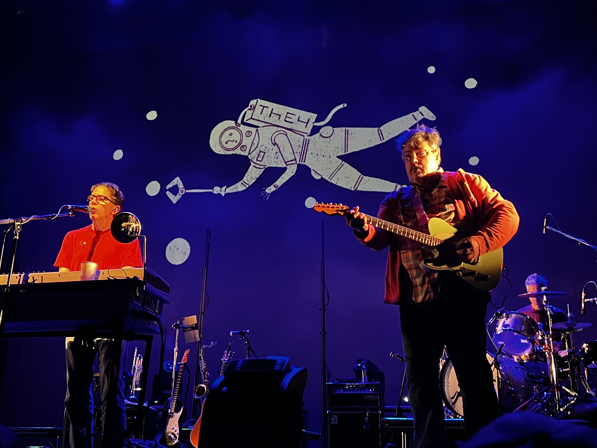
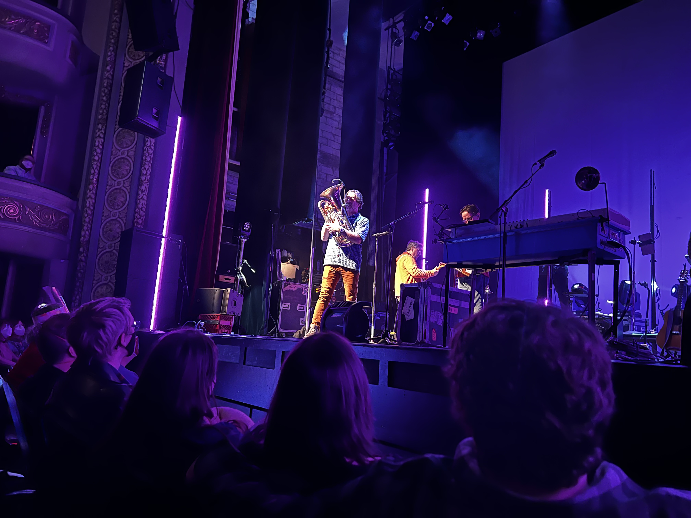

They Might Be Giants Flood Tour
This past Saturday my family all had plans, so I took the opportunity to try something I’ve been meaning to try for a while: attend a concert alone. The advantage of loner concert attendance is that you can often get last-minute tickets in good seats for a great price. My friend, Patrick, also suggests that going alone can be quite fun as you aren’t concerned with making sure your friends are having a good time; you can just enjoy your experience.
So I picked up a ticket to see They Might Be Giants. I’m not a rabid fan of the band, but I’ve spun Flood a million times and this tour was celebrating Flood with the promise that every song from the album would be played. I was pretty pumped!
The ticket was not a steal, but it was a fair price for the second row. My ideal seats are generally more in the tenth to fifteenth rows, but this seemed like a good time to try a close concert. The downsides were real. My views were obstructed, especially to the horn section. My neck was craned and a bit sore. The upside in this case was that those around me were pretty big fans and that meant a lot of good energy.
Patrick’s promise of enjoyment when going alone played out pretty well. I had zero concerns for anyone else having fun, just enjoying the moment myself. I certainly like going with other people, but I’ll also be content to go alone if there aren’t any takers for a given show. Especially if I can steal a deal.
I’ve been to a number of concerts over late summer and this fall: The Decemberists, The Shins, Tenacious D, and Nick Mason to name a few. The reason I’m finally writing a post is because I wanted to document some things about TMBG’s horn section for myself. That’s when I remembered, hey, I have a blog. Maybe that’s a good place to write?!
On this tour the band was traveling with three horn players who primarily played trumpet, tenor sax, and trombone. They were phenomenal!
Stan Harrison played a killer tenor sax, taking a couple of solos throughout the night. Dan Levine had an outstanding trombone solo, but the highlight for me is when he came out for a euphonium solo. That was the instrument I played throughout high school and college. Woo!
Mark Pender played trumpet in The Max Weinberg 7 on Late Night with Conan O'Brien. He has played with Bruce Springsteen along with numerous other artists and he absolutely honked. During “Istanbul (Not Constantinople)” he had a solo, followed by about three minutes of playing a single note. It was absurd. You can get an idea from this Conan clip. (I love in that clip when Conan asks when he’ll stop, the band says, “Maybe when he’s sixty.” Nope, because he’s in his sixties now and still doing it!)
All this is to say, if you are even a small fan of TMBG, I highly recommend seeing them in concert. And if you enjoy bands with a horn section, you’re not going to do much better than a TMBG gig with horns. The band clearly attracts the best of the best to play with them. Get yourself to a show!


October 17, 2022